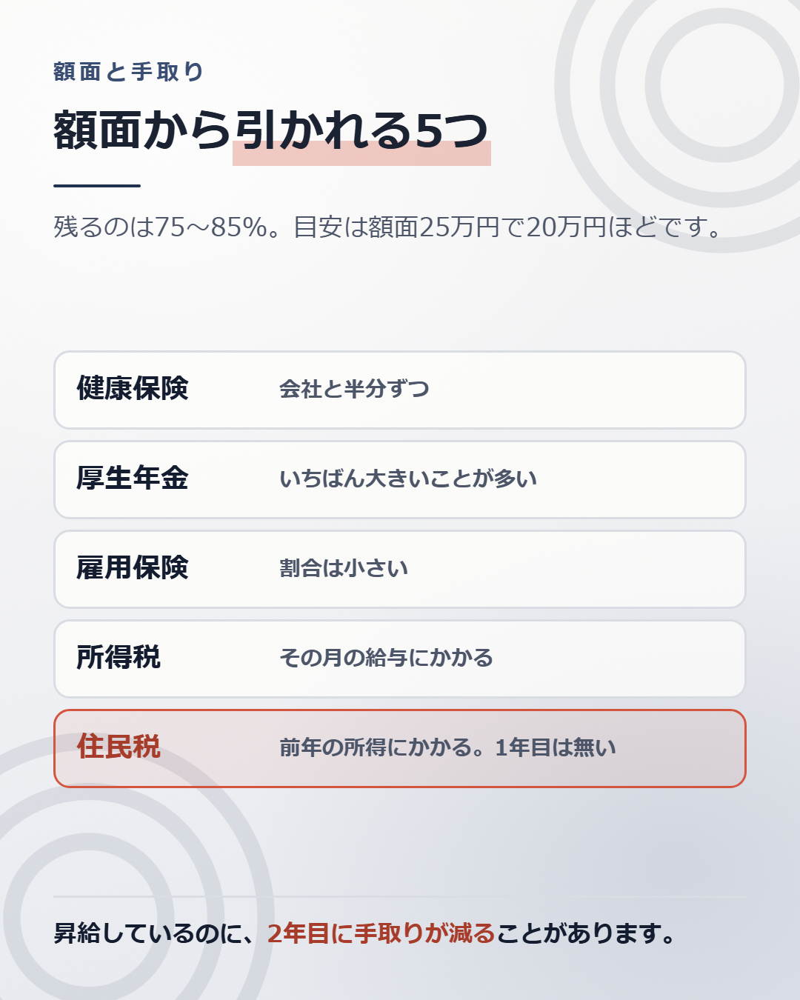

はじめての給料日、明細の右下だけ見ませんでしたか。
額面25万円のはずが、振り込まれたのは20万円ほど。引かれた5万円が何なのかは、たいてい説明されません。
引かれているのは5つです。健康保険料、厚生年金保険料、雇用保険料、所得税、住民税。 前の3つが社会保険料、あとの2つが税金です。

多くの人が、社会保険料は毎月の給料に応じて変わると思っています。実際は違います。
社会保険料は標準報酬月額という数字で決まります。実際の給料を、階段状の等級にあてはめた金額です。健康保険は50の等級（健康保険法40条）、厚生年金保険は32の等級（厚生年金保険法20条）に分かれています。
標準報酬月額は、4月・5月・6月に受け取った報酬の平均で決まり、その年の9月から翌年8月まで使われます。 定時決定といいます（健康保険法41条、厚生年金保険法21条）。
つまり、4月から6月に残業が多かった人は、残業が減った10月以降も、高いままの保険料を払い続けます。
途中で等級を変える仕組みもあります。随時改定といいます（健康保険法43条、厚生年金保険法23条）。ただし、基本給や役職手当のような固定的な賃金が変わったときに限られます。 残業代は固定的な賃金ではないので、残業が減っただけでは等級は戻りません。
春に忙しい会社では、ここで差が出ます。自分の標準報酬月額は、明細か、会社から配られる標準報酬決定通知書で確認できます。仕組みの詳しい話は、記事10にまとめています。
20代でいちばん驚かれるのが、ここです。
住民税は、前年の所得にかかります。
新卒1年目は、前年に所得がありません。だから1年目は住民税が引かれません。 2年目の6月から引かれはじめます。
給与から天引きする方法を特別徴収といいます。地方税法が、6月から翌年5月までの12回に分けて給与から引くよう定めています（地方税法321条の3から321条の5）。区切りが4月ではなく6月なのは、このためです。
昇給して額面が上がっているのに、手取りが去年より減ることがあります。 計算間違いではありません。住民税が始まっただけです。
同じことは転職のあとにも起きます。年収が下がった翌年は、下がる前の所得にかかった住民税を払います。逆に、年収が上がった年は、住民税が追いついてきません。住民税は、いつも1年遅れて効いてきます。
おおまかな目安は、額面の75%から85%です。
年収が高いほど、引かれる割合は増えます。社会保険料には上限がありますが、所得税は所得が増えるほど税率が上がるためです。
だから「年収が100万円増えたのに、生活は100万円ぶん楽にならない」ということが起きます。増えた100万円のうち、手元に残るのは70万円台のことが多いです。
賞与を「まるごともらえるお金」だと思っていると、ここでも差が出ます。
賞与からも、社会保険料と所得税が引かれます。住民税は引かれません。住民税は毎月の給与から取られているためです。
手取りの感覚としては、賞与も額面の8割前後と思っておくと、大きく外れません。
明細に出てこない話をひとつ。
健康保険料と厚生年金保険料は、会社と本人で半分ずつ負担しています。 労使折半といいます。健康保険法161条1項と、厚生年金保険法82条2項が定めています。
厚生年金保険の料率は18.3%です。2017年9月に引き上げが終わって、そこで固定されました（厚生年金保険法81条4項）。半分ずつなので、本人の負担は9.15%です。
ただし、全部が半分ずつではありません。 ここは分けて覚えてください。
明細の厚生年金保険料が3万円なら、会社も同じ3万円を、別に払っています。
つまり、額面25万円の人にかかっている会社の費用は、25万円ではありません。30万円近くになります。
この差は、転職の場面で効いてきます。会社が「年収500万円まで出せる」と考えるとき、会社の頭の中にある数字は、あなたが受け取る500万円より2割ほど大きいからです。
なぜそこまで出せるのかは、会社がひとりあたりいくら稼いでいるかで決まります。その話は別の記事にまとめています。
もうひとつ、明細で確かめられることがあります。
残業代は、基礎時給をもとに計算されます。基礎時給は、月給を、1か月平均の所定労働時間で割った金額です。労働基準法施行規則19条が割り方を定めています。
ここで、手当の扱いに注意が要ります。手当が全部そのまま外れるわけではありません。
計算の土台から外してよい賃金は、7つだけです（労働基準法37条5項、労働基準法施行規則21条）。家族手当、通勤手当、別居手当、子女教育手当、住宅手当、臨時に支払われた賃金、1か月を超える期間ごとに支払われる賃金です。
7つに入らない手当は、土台に入ります。 役職手当も、資格手当も、営業手当も入ります。
だから「手当で埋めてある人は残業代も低い」とは言い切れません。どの手当で埋めてあるかによります。 住宅手当で埋めてあれば下がります。役職手当で埋めてあれば下がりません。
自分の基礎時給は、明細の残業手当を残業時間で割れば、おおよそ出ます。出してみると、思っていたより低いことが多いです。 計算の全体は、記事8にまとめています。
いちばん新しい給与明細を1枚出してください。
控除の欄を、5つに分けます。 健康保険料。厚生年金保険料。雇用保険料。所得税。住民税。
分けてみると、いちばん大きいのがどれか分かります。多くの場合、厚生年金保険料がいちばん大きいはずです。
次に、去年の同じ月の明細と並べます。 額面がいくら増えて、手取りがいくら増えたかを見ます。額面の増え方と、手取りの増え方は一致しません。 一致しない幅が、自分の場合の目減りです。
社会保険料の料率は決まっています。税率も決まっています。住んでいる場所で多少変わりますが、交渉できるものではありません。
手取りを増やす方法は、額面を増やすことしかありません。
そして額面は、記事1で書いたとおり、等級と評価と市場の3つで決まります。3つのうち、いちばん大きく動くのは市場です。
自分の市場での値段は、外から値段がつかないと分かりません。調べ方は、別の記事にまとめています。